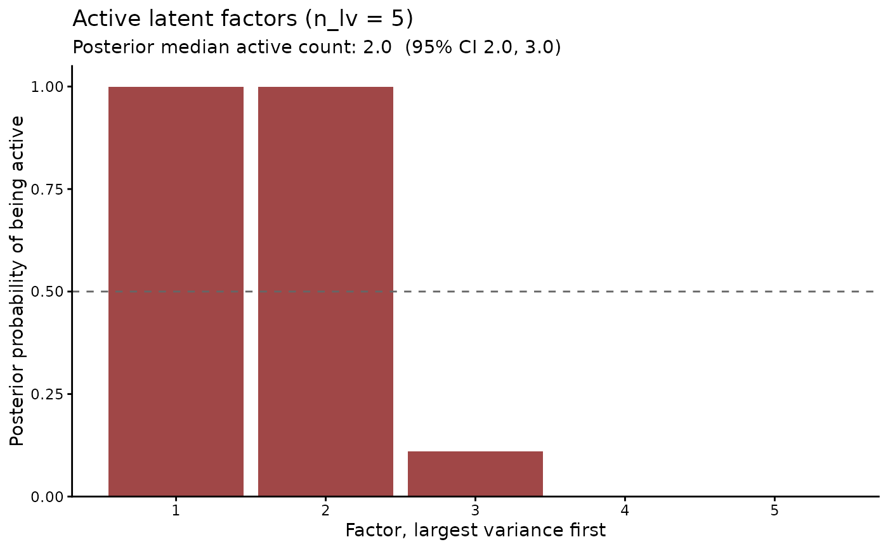

A factor model fitted with n_lv factors may need fewer. This
function counts the factors whose variance the data support. It
suits a fit under the multiplicative gamma process (MGP) prior,
loadings_prior = "mgp" (Bhattacharya and Dunson 2011). That prior
shrinks surplus factors toward zero. n_lv then acts as a ceiling.
The function applies to every factor model. Under other loadings
priors a surplus factor keeps the variance its prior gives it. The
count can then exceed the number of factors the data need.
Usage
active_factors(object, ...)
# S3 method for class 'mvgam'
active_factors(
object,
criterion = c("relative", "cumulative"),
threshold = NULL,
prob = 0.5,
...
)Arguments
- object
A fitted
mvgamobject whose trend includes at least two latent factors (n_lv >= 2).- ...
Unused. Anything passed here is refused.
- criterion
The activity rule:
"relative"(the default) or"cumulative". Details describes each.- threshold
Numeric in
(0, 1], the cut-off ofcriterion.NULL(the default) takes0.1for"relative"and0.9for"cumulative".- prob
Numeric in
(0, 1). A dimension is reported active when its posterior probability of activity is at leastprob. Defaults to0.5.
Value
A list with class mvgam_active_factors containing:
count: the posteriormedian,q025andq975of the per-draw count of active dimensions.per_factor: data frame with one row per dimension, largest first. Its columns are thefactorrank, the posteriorprob_active, the posteriormedian_variance\(\lambda_k\), the posteriormedian_shareof the total variance andis_active.threshold: list withcriterion,valueandprob.n_lv: the number of factors the model was fitted with.
Details
The factors give the series the covariance \(Z \Omega Z^\top\),
where Z holds the loadings and \(\Omega\) the covariance of the
latent states. Its eigenvalues \(\lambda_1 \ge \lambda_2 \ge
\dots\) are the variances along its principal dimensions. Each
posterior draw gives one set. The eigenvalues stay the same when the
factors are rotated or relabelled, which the individual columns of
Z do not.
Two rules decide whether dimension k is active in a draw:
"relative"The dimension holds at least
thresholdtimes the variance of the leading one, \(\lambda_k \ge\)threshold\(\lambda_1\). The defaultthresholdis0.1. The rule counts any number of factors of similar size."cumulative"The dimension is among the fewest leading dimensions whose variance reaches a share
thresholdof the total. The defaultthresholdis0.9. The count is the number of factors a scree plot would keep.
prob_active is the posterior probability that a dimension is
active. A dimension with prob_active >= prob is reported active.
The count is summarised over the per-draw counts.
Both rules compare the factors with one another. The leading
dimension is always active, which makes the count at least one. A
model whose factors hold almost no variance still reports one.
shared_variation() gives the size of that variance on the scale
of the linear predictor.
References
Bhattacharya, A. and Dunson, D. B. (2011). Sparse Bayesian infinite factor models. Biometrika, 98(2), 291-306. doi:10.1093/biomet/asr013 .
See also
shared_variation() reports the covariance the factors
give the series. compare_loadings() compares the loadings under
two priors. The JSDM article fits
an MGP prior and counts its active factors.
Other latent dynamics:
compare_loadings(),
fevd.mvgam(),
irf.mvgam(),
ordinate(),
posterior_transition_matrix(),
residual_cor(),
shared_variation(),
stability.mvgam()
Examples
# \dontrun{
# Counts of 20 species at 100 sites, driven by two latent factors.
# Each species has its own intercept and response to `env`.
simdat <- sim_jsdgam(family = brms::negbinomial(), n_species = 20L,
n_sites = 100L, n_lv = 2L, seed = 3L)
# Up to five factors under the MGP prior, which shrinks the factors
# the data do not need
mod <- jsdgam(
y ~ env * series,
data = simdat$data_train,
family = brms::negbinomial(),
n_lv = 5L,
loadings_prior = "mgp",
chains = 2,
silent = 2
)
# Dimensions holding at least a tenth of the leading one's variance
af <- active_factors(mod)
af
#> Active latent factors
#> Rule: variance at least 0.1 times the leading factor's
#> Fitted with: n_lv = 5
#> Posterior median active count: 2.0 (95% CI 2.0 - 3.0)
#>
#> Posterior probability that each factor is active, largest first:
#> factor prob_active median_variance median_share is_active
#> 1 1.000 9.3600 0.661 TRUE
#> 2 1.000 4.0200 0.284 TRUE
#> 3 0.110 0.5390 0.038 FALSE
#> 4 0.001 0.1480 0.010 FALSE
#> 5 0.000 0.0366 0.003 FALSE
plot(af)

# The fewest dimensions that explain 90 percent of the variance
active_factors(mod, criterion = "cumulative")
#> Active latent factors
#> Rule: fewest factors reaching a 0.9 share of the variance
#> Fitted with: n_lv = 5
#> Posterior median active count: 2.0 (95% CI 2.0 - 3.0)
#>
#> Posterior probability that each factor is active, largest first:
#> factor prob_active median_variance median_share is_active
#> 1 1.000 9.3600 0.661 TRUE
#> 2 1.000 4.0200 0.284 TRUE
#> 3 0.054 0.5390 0.038 FALSE
#> 4 0.000 0.1480 0.010 FALSE
#> 5 0.000 0.0366 0.003 FALSE
# Next: ordinate() plots the species on the leading factors
# }